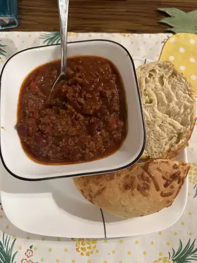

My Hearty Chili
Back to main page

Description
Are you on the hunt to find the best chili recipe on the internet? Well,
stop right there,
because you just did! If you're looking for hearty, filling chili that's
just the right level
of spicy, this is the chili recipe for you.
Yes, this recipe does look like you throw everything but the kitchen sink
in it, but wow is
the long ingredient list worth it. You might as well just make a double
batch because you'll
be craving more as soon as it's gone.
Ingredients
- 4 tablespoons olive oil
- 1 yellow onion, chopped
- 1 red bell pepper, chopped
- 1 Anaheim chili pepper, chopped
- 2 red jalapenos, chopped
- 4 garlic cloves, minced
- 2 1/2 pounds lean ground beef
- 1/4 cup Worchestershire sauce
- 1 pinch garlic powder
- 2 beef buillon cubes
- 1 can light beer
- 1 can crushed San Marzano tomatoes
- 1 can fire-roasted diced tomatoes
- 1 can tomato paste
- 1/2 cup white wine
- 2 tablespoons chili powder
- 2 tablespoons ground cumin
- 1 tablespoon brown sugar
- 1 tablespoon chipotle pepper sauce
- 2 1/2 teaspoons dried basil
- 1 1/2 teaspoon smoked paprika
- 1 teaspoon salt
- 1/2 teaspoon dried oregano
- 1/2 teaspoon ground black pepper
- 2 cans dark red kidney beans
- 1 cup sour cream
- 3 tablespoons chopped fresh cilantro
- 1/2 teaspoon ground cumin
Steps to create lasagna
- Gather all ingredients
-
Heat oil in a large pot over medium heat; cook and stir onion, bell
pepper,
Anaheim pepper, jalapeno peppers, and garlic in the hot oil until
softened.
-
Meanwhile, heat a large skillet over medium-high heat. Cook and
stir beef in the hot skillet until browned and crumbly, 5 to 7 minutes.
-
Add Worcestershire sauce and garlic powder. Crumble bouillon cubes
over beef and add beer. Continue to cook , scraping any browned bits
from the bottom of the skillet, until liquid is hot, about 3 minutes.
- Stir beef mixture into pepper mixture.
-
Stir crushed tomatoes, diced tomatoes, tomato paste, and wine to the
beef mixture. Season with chili powder, 2 tablespoons cumin, brown
sugar, pepper sauce, basil, paprika, salt, oregano, and black pepper.
-
Bring to a boil and reduce heat to medium-low. Cover and simmer until
meat and vegetables are very tender and flavors have developed in the
chili, about 90 minutes, stirring occasionally.
-
Mix kidney beans into beef and vegetables. Continue to simmer until
beans are hot, about 30 minutes more.
-
Blend sour cream, cilantro, and remaining 1/2 teaspoon cumin in a
food processor until smooth. Serve sour cream mixture with chili.
- Serve hot and enjoy!